Ability
Six Eyes
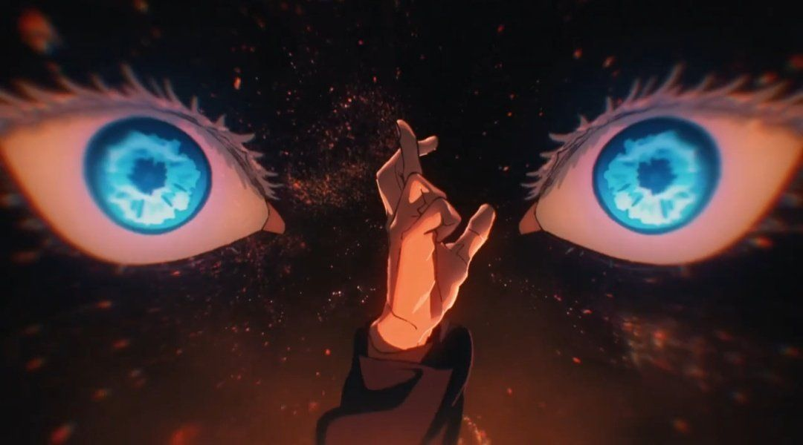The Six Eyes (六りく眼がん Rikugan?) are an innate gift rarely inherited within the Gojo clan. They are a nonstandard jujutsu trait manifesting as a pair of bright blue eyes that grant a bearer extrasensory perception. This includes seeing the flow of cursed energy in extreme detail and the ability to use that flow to read cursed techniques. The eyes also allow for ultra-precise control over the user's cursed energy, which is indispensable for properly utilizing the Limitless technique.
Satoru Gojo is the first sorcerer to be born with both the Limitless and the Six Eyes in approximately four hundred years.
Limitless
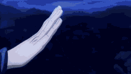Limitless (無む下か限げん Mukagen?) is an inherited technique passed down in the Gojo Clan. This technique brings the concept of "Infinity" into reality, allowing the user to manipulate and distort space at will.
While any member of the Gojo Family can hereditarily gain this technique, only those who also possess the Six Eyes as well can truly master the power of the Limitless.[1] Satoru Gojo is the first sorcerer to be born with both the Limitless and the Six Eyes in the last four hundred years.
Blue
 Cursed Technique Lapse: Blue (術じゅつ式しき順じゅん転てん「蒼あお」 Jutsushiki Junten・Ao?): The reinforced version of the neutral limitless;[38] Blue is the byproduct of Gojo amplifying the Limitless with negative cursed energy, producing a vacuum. Through these, Gojo creates a scenario where the world itself is forced to correct itself and fill in the negative space, causing all matter in the range of the commanded space to be pulled together.[44]
Cursed Technique Lapse: Blue (術じゅつ式しき順じゅん転てん「蒼あお」 Jutsushiki Junten・Ao?): The reinforced version of the neutral limitless;[38] Blue is the byproduct of Gojo amplifying the Limitless with negative cursed energy, producing a vacuum. Through these, Gojo creates a scenario where the world itself is forced to correct itself and fill in the negative space, causing all matter in the range of the commanded space to be pulled together.[44]
Red
.gif) Cursed Technique Reversal: Red (術じゅつ式しき反はん転てん「赫あか」 Jutsushiki Hanten・Aka?)[46]: Being an inversion of Blue, Red has the opposite effect. By flowing positive energy generated from reverse cursed technique into his Limitless technique,[47][48] Satoru inverts the properties of Blue and activates the divergence of Infinity, causing an extremely powerful repulsive force that blasts targets away. Red outputs at least twice as much as energy as Blue.[49]
Cursed Technique Reversal: Red (術じゅつ式しき反はん転てん「赫あか」 Jutsushiki Hanten・Aka?)[46]: Being an inversion of Blue, Red has the opposite effect. By flowing positive energy generated from reverse cursed technique into his Limitless technique,[47][48] Satoru inverts the properties of Blue and activates the divergence of Infinity, causing an extremely powerful repulsive force that blasts targets away. Red outputs at least twice as much as energy as Blue.[49]
Purple
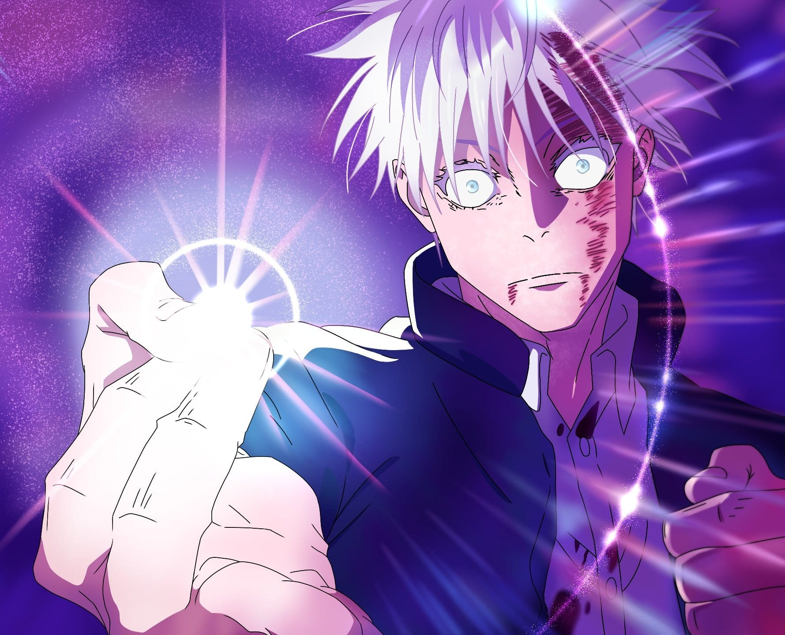Hollow Technique: Purple (虚きょ式しき「茈むらさき」 Kyoshiki・Murasaki?): An advanced technique that collides the Lapse and Reversal of the Limitless, resulting in the creation of imaginary mass that is then launched at the target to deal destructive damage.[50]
Reverse Cursed Technique
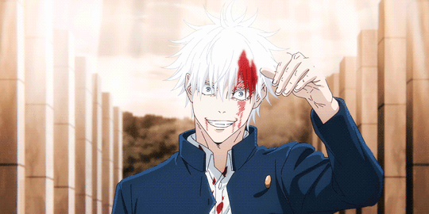Reverse Cursed Technique (反はん転てん術じゅつ式しき Hanten Jutsushiki?): At first, while a first and second year student of Jujutsu High, Satoru was unable to grasp the complex nature of reverse cursed technique. After being put on his deathbed during his first fight with Toji Fushiguro, Satoru finally understood how to perform the technique and tapped into the core of cursed energy, granting him the ability to not only heal himself, but also make the positive energy flow into the Limitless, giving him access to his Red and Hollow Purple techniques.[51]
During his duel with Sukuna, Satoru survived the onslaught of slashes from Malevolent Shrine by using reverse cursed technique at full power.[52] Additionally, Satoru further demonstrated his expertise with reverse cursed technique by using it to replenish his burned-out cursed technique, an unprecedented and seemingly impossible feat even for a talented sorcerer like Yuta Okkotsu.[53]
Curtain
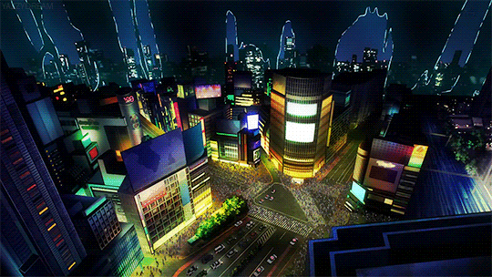Curtain (帳とばり Tobari?): Gojo can create a barrier that surrounds a certain area. The barrier can seal the area off from other people or a specific person wanting to get in.
Domain Expansion
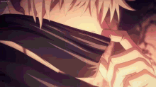Unlimited Void (無む量りょう空くう処しょ Muryōkūsho?): Satoru's Domain Expansion. It creates a metaphysical space that causes the victims to receive all kinds of stimuli and information endlessly, restraining their thought processes and actions.[56] In terms of raw strength, Satoru's domain is equal to Sukuna's on the inside, only losing due to Malevolent Shrine's open domain that allowed Sukuna to destroy the barrier of Unlimited Void.[57] Satoru's skill with his Domain Expansion is so great that he can precisely activate it for only 0.2 seconds, limiting its lasting effect on those he traps within it,[58] and is able to freely change the conditions of Unlimited Void's barrier. Satoru himself and those he makes physical contact with are immune to its effect.[59]
Story
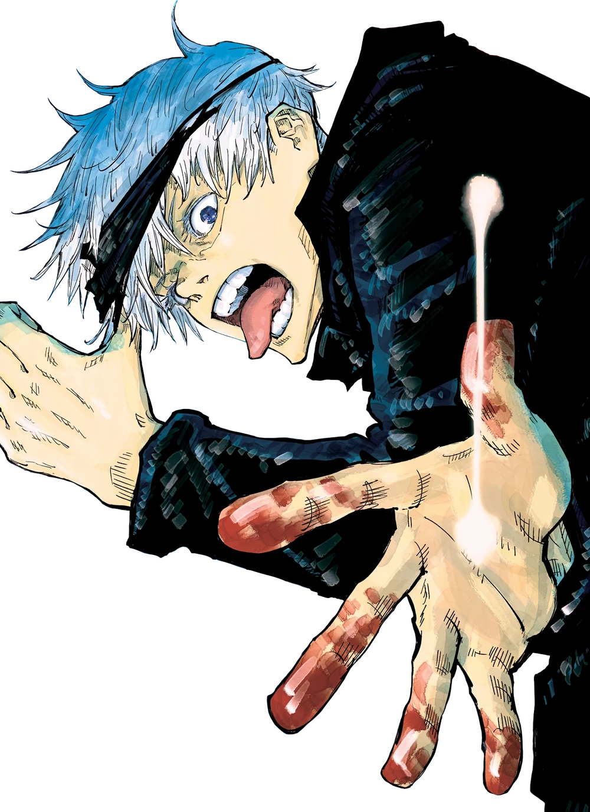Satoru Gojo was born on December 7, 1989.[1] He was the first person in approximately four hundred years to inherit both the Limitless inherited technique and the Six Eyes.[2] After he was born, the balance of power shifted and Satoru had a bounty worth over a hundred million put on his head and was targeted by bounty hunters, however they were ultimately powerless before him.[3]
Gojo's Past Arc
format(webp) (1).webp) During his second year as a student, Gojo along with his classmates, Suguru Geto and Shoko Ieiri, went to check up on Mei Mei and Utahime after not hearing from them in two days. After the three manage to rescue Mei Mei and Utahime along with dealing with the curse, Geto along with Gojo and Shoko attend a meeting where Masamichi Yaga punishes Gojo for not putting up a curtain.[5]
During his second year as a student, Gojo along with his classmates, Suguru Geto and Shoko Ieiri, went to check up on Mei Mei and Utahime after not hearing from them in two days. After the three manage to rescue Mei Mei and Utahime along with dealing with the curse, Geto along with Gojo and Shoko attend a meeting where Masamichi Yaga punishes Gojo for not putting up a curtain.[5]
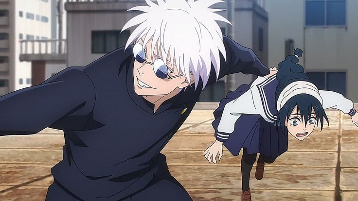Later, Geto is in the classroom with Gojo and Shoko, where they discuss the importance of a curtain. Geto and Gojo then get into an argument about the strong protecting the weak which almost ends with them fighting. Suddenly, Masamichi enters the room and gives Geto and Gojo a mission from Master Tengen: to escort the new Star Plasma Vessel to Tokyo Jujutsu High.[6] explains to the two about the importance of the mission and that they will need to look out for two groups, Q and the Time Vessel Association, who want to stop them. After being informed about the mission, Gojo and Geto head out.[7]
As they arrive at the location to pick up the Star Plasma Vessel for the mission, an explosion happens and the vessel falls to the ground from the window of her hotel room. Before the girl hits the ground, Gojo helps Geto save the vessel. Gojo is then confronted by a member of Q, Bayer.[8] Gojo easily defeats Bayer, and meets up with Geto and the vessel, Riko Amanai. Gojo, along with Geto, introduce themselves to Riko and her caretaker, Misato Kuroi. The four then start to talk, and Riko explains how she is not upset about fusing with Tengen.
After talking, Gojo and Geto are forced by Riko to escort her to her junior high so that she can visit her friends one last time. Once they arrive at the school, Gojo calls Masamichi, who explains how they have to oblige Riko before she fuses with Tengen. After talking with Masamichi, they decide to check the surveillance cursed spirits and Geto tells Gojo that two have been exorcised.[10] Gojo and Misato head out to protect Riko, while Geto deals with the intruders.
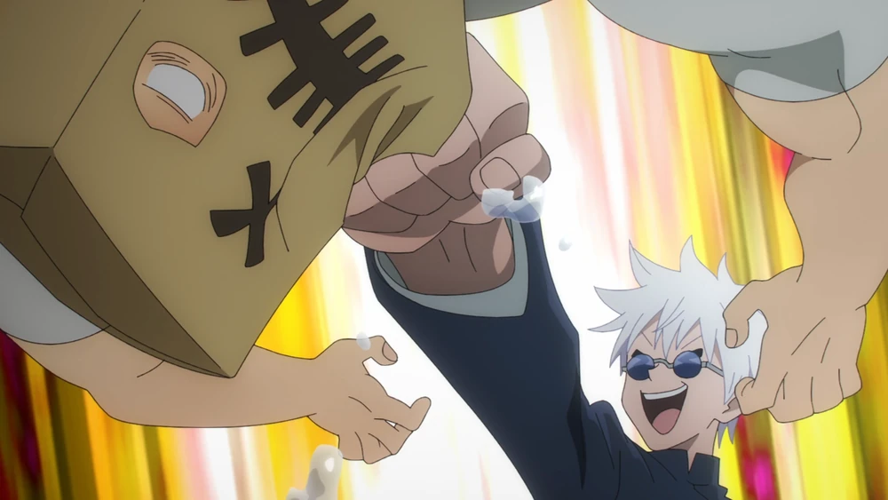Gojo manages to find Riko and drags her off to take her to Jujutsu High. On the way, Gojo is contacted by Geto, who informs him about the situation.[12] Suddenly, the two encounter multiple identical opponents and Gojo figures out that the enemy is using his Cloning Technique to increase his numbers. Nonetheless, Gojo manages to easily defeat the man, but Riko informs him that Misato has been captured by other enemies./div>
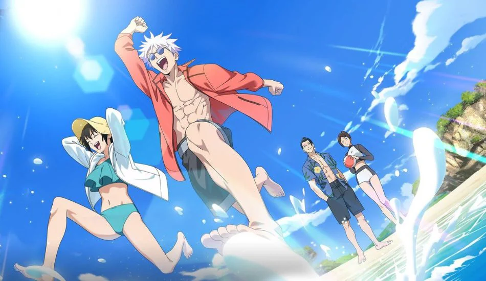Gojo and Riko meet up with Geto and they discuss what to do next. They decide to save Misato and head to Okinawa for the meeting spot with the kidnappers. They manage to save Misato and decide to have some fun before heading back. When it's time head back to the college, Gojo convinces the group to stay for one more day after seeing Riko's disappointed look. Geto asks Gojo if he is alright since Gojo has been using his technique for a while, but Gojo says that he is fine and they continue to have fun. The next day, the four head back to the college but are attacked by Toji Fushiguro when they arrive, with Gojo having a sword stabbed through his chest.[14]
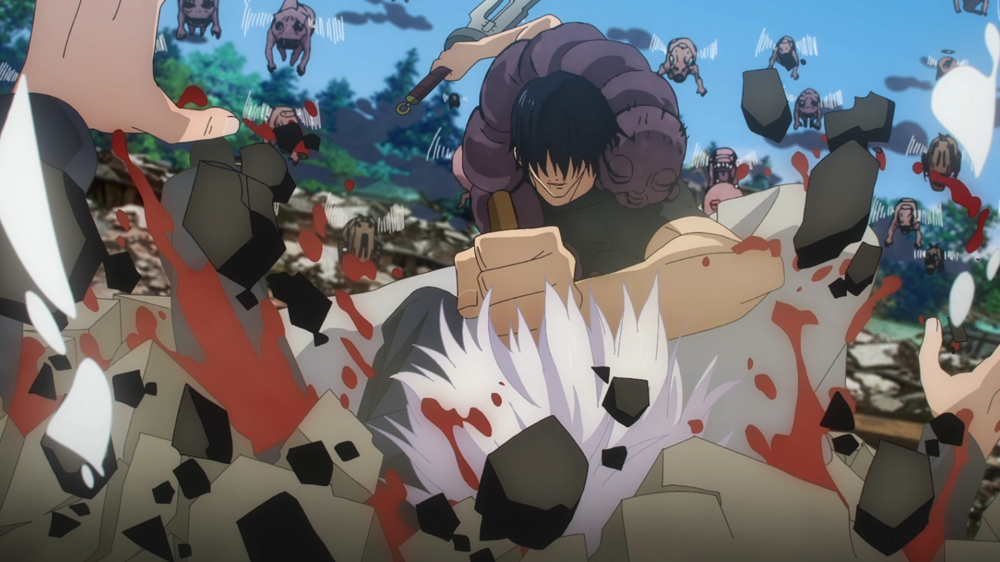Gojo tells the others to head inside, while he takes care of the enemy. Gojo fights the man but notices that he can't read his opponent's moves, because Toji has no cursed energy. When he loses track of the enemy, Gojo decides to sweep the field with the maximum cursed energy output of his Cursed Technique Lapse: Blue. After sweeping the field, Gojo figures that his opponent won't be able to sneak up on him but Toji manages to block his vision with multiple fly heads. Satoru momentarily hesitates upon considering the possibility that Toji went after Riko, allowing the Sorcerer Killer to close in and stab him through the neck with the Inverted Spear of Heaven.[15] Toji then cuts Gojo down in a rapid flurry of slashes before finishing him off with a stab to the head, seemingly killing the jujutsu sorcerer.[
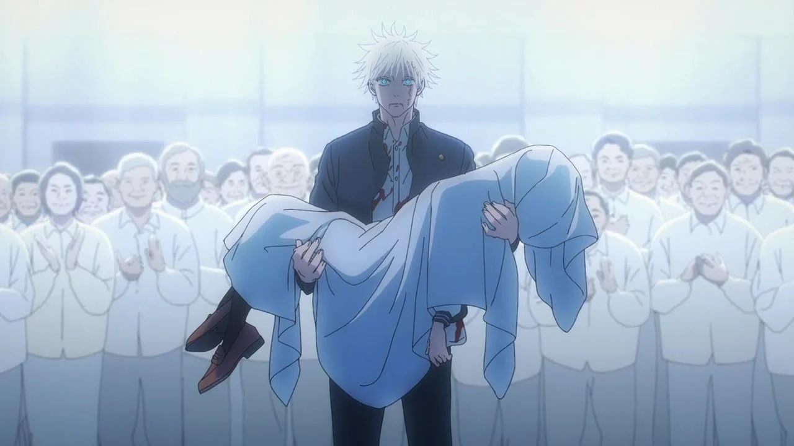Unbeknownst to Toji, Gojo learned how to perform reverse cursed technique on the verge of death, allowing him to heal himself. After recovering, Gojo arrives at the Star Religious Group's headquarters to retrieve Riko's body. Once there, he confronts Toji and explains how he managed to survive.[17] Gojo then takes on the man and after a couple of exchanges, manages to kill him with his Hollow Technique: Purple.[18] Gojo then heads inside of the Star Religious Group's base and manages to retrieve Riko's body. When Geto shows up, Gojo suggests that they kill everyone there, but Geto dissuades him and tells him that there is no reason to do so since their group will be disbanded soon enough.
.gif) A year later, Geto and Shoko are helping Gojo with his techniques. Gojo explains how he is able to continuously use his technique without causing harm to himself.[20] Days later, Gojo is informed that Geto is on the run after having massacred an entire village along with killing his own parents. Gojo is contacted by Shoko who tells him that Geto is in Shinjuku. Gojo heads over to Shinjuku and manages to confront Geto. The two then talk about how Geto plans to kill every non-sorcerer in world, with Geto questioning Gojo about the connection between his strength and identity. When Geto starts to walk away, Gojo considers killing his best friend but is unable to bring himself to do so. Gojo then meets with Masamichi and the two discuss his strength, with Gojo concluding that he can only save those who are prepared to be saved.
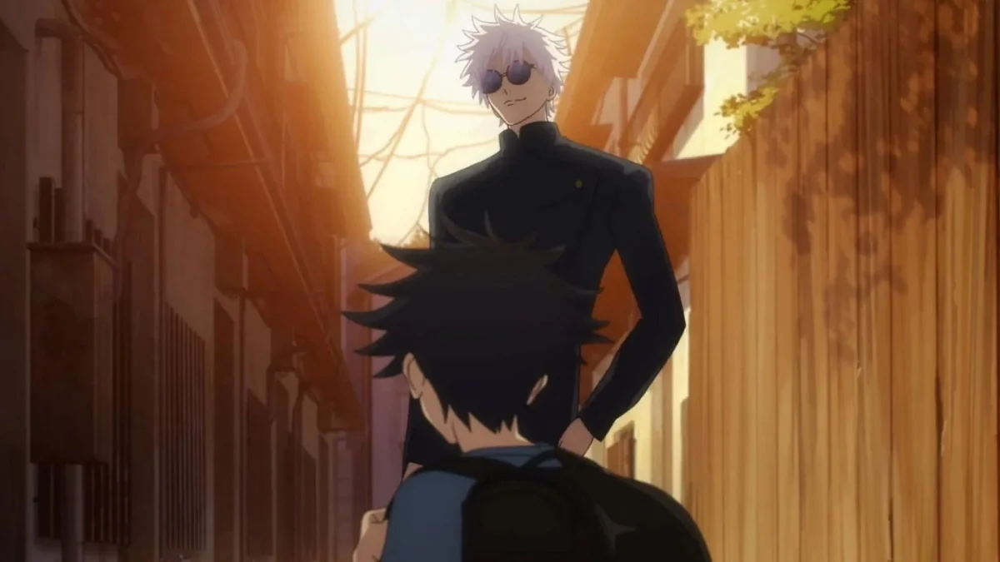Some time later, Gojo meets with a young Megumi Fushiguro, and the two talk about Megumi's father and the Zenin family.[22] When Megumi says that he doesn't care about his dad anymore since he hasn't been around for a while, Gojo tells Megumi to just ask him if he wants to know anything about his dad. Gojo then asks if he wants to go to the Zenin family, to which Megumi says that his answer will depend if his sister will be happy if they go. Gojo tells Megumi that his sister would not be happy, causing Megumi to get angry. Seeing that the boy is refusing the offer, Gojo assures him that he will take care of things and that Megumi should focus on getting strong from now on.
Gojo would go on to pay for Megumi and Tsumiki's utility bills after the money Tsumiki's mother left for them ran out. He also occasionally brings Megumi with him on missions.[24] On one mission, Megumi rescues a young Hana Kurusu from the cursed spirit that trapped her by having her follow his white Divine Dog. After a passerby notifies the police about Hana, the girl watches as the shikigami returns to Megumi. Gojo teases Megumi by suggesting that Hana might fall in love with him.
A year later, Geto and Shoko are helping Gojo with his techniques. Gojo explains how he is able to continuously use his technique without causing harm to himself.[20] Days later, Gojo is informed that Geto is on the run after having massacred an entire village along with killing his own parents. Gojo is contacted by Shoko who tells him that Geto is in Shinjuku. Gojo heads over to Shinjuku and manages to confront Geto. The two then talk about how Geto plans to kill every non-sorcerer in world, with Geto questioning Gojo about the connection between his strength and identity. When Geto starts to walk away, Gojo considers killing his best friend but is unable to bring himself to do so. Gojo then meets with Masamichi and the two discuss his strength, with Gojo concluding that he can only save those who are prepared to be saved.
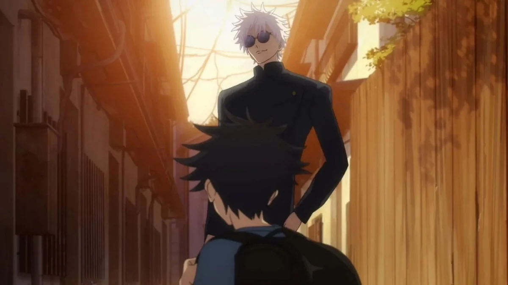Some time later, Gojo meets with a young Megumi Fushiguro, and the two talk about Megumi's father and the Zenin family.[22] When Megumi says that he doesn't care about his dad anymore since he hasn't been around for a while, Gojo tells Megumi to just ask him if he wants to know anything about his dad. Gojo then asks if he wants to go to the Zenin family, to which Megumi says that his answer will depend if his sister will be happy if they go. Gojo tells Megumi that his sister would not be happy, causing Megumi to get angry. Seeing that the boy is refusing the offer, Gojo assures him that he will take care of things and that Megumi should focus on getting strong from now on.
Gojo would go on to pay for Megumi and Tsumiki's utility bills after the money Tsumiki's mother left for them ran out. He also occasionally brings Megumi with him on missions.[24] On one mission, Megumi rescues a young Hana Kurusu from the cursed spirit that trapped her by having her follow his white Divine Dog. After a passerby notifies the police about Hana, the girl watches as the shikigami returns to Megumi. Gojo teases Megumi by suggesting that Hana might fall in love with him.
Cursed Child Arc
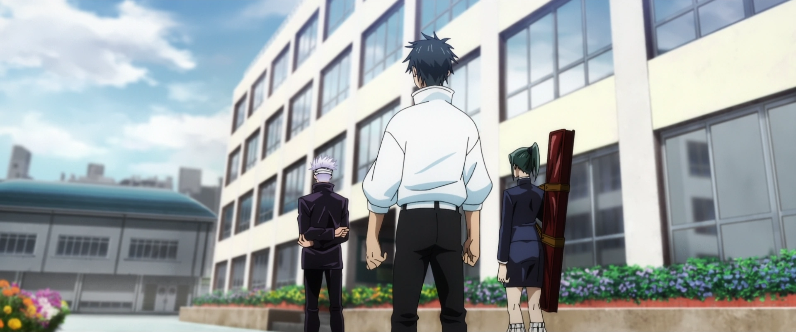After a major incident involving the curse that was Rika Orimoto resulted in the deaths of a few jujutsu sorcerers, Gojo is assigned to secretly execute the human cursed by the cursed spirit, Yuta Okkotsu.[26] Realizing Yuta's potential, Gojo instead brings him back to Tokyo Jujutsu High and convinces the higher-ups to push off his execution and to let Yuta join the college. When Yuta decides to stay in isolation, Gojo heads over and convinces him to attend the college. Gojo then brings Yuta to the college and introduces him to his new classmates; Maki Zenin, Panda, and Toge Inumaki. As the three notice that Yuta is cursed and prepare to attack him, Gojo tries to warn them, but Rika shows up to defend Yuta. Gojo then informs the class of Yuta's situation and formally introduces the students to their new classmate. Gojo then pairs the students up for their lesson.
Gojo brings Maki and Yuta to an elementary school and explains that they will be exorcising curses and saving two children that have disappeared there. Gojo then puts up a curtain and leaves the two of them to handle the rest.[28] When Yuta unleashes Rika to handle a large cursed spirit, Gojo comments on the intensity of the curse.[29] He then congratulates the two young sorcerers after they complete the missionAfter the mission, Gojo brings them to a hospital and informs Yuta that the two boys and Maki will be alright. Gojo then talks with Yuta and how he plans to release Rika from the curse that he most likely placed on her.[31] Gojo then takes Yuta to Jujutsu High's cursed warehouse and gives him a katana. Gojo explains to Yuta that he will need to pour the powers of the curse through the katana in order to break the curse, as a curse is most stable when possessing an item, and that Yuta will need to train with the katana first
Some time later, Gojo is summoned by the higher-ups, who reprimand him for allowing Rika's full manifestation. After the meeting, Gojo heads towards his students while complaining about the higher-ups. Gojo watches as Yuta and Maki train until he assigns Yuta and Toge a mission. When Yuta wonders about Toge, Gojo explains who Toge is and what he is capable of. Gojo also orders Yuta to only observe Toge and not let Rika out completely, otherwise he and Yuta will be executed. After the mission is complete, Gojo is informed by Kiyotaka Ijichi about what had happened during the mission.
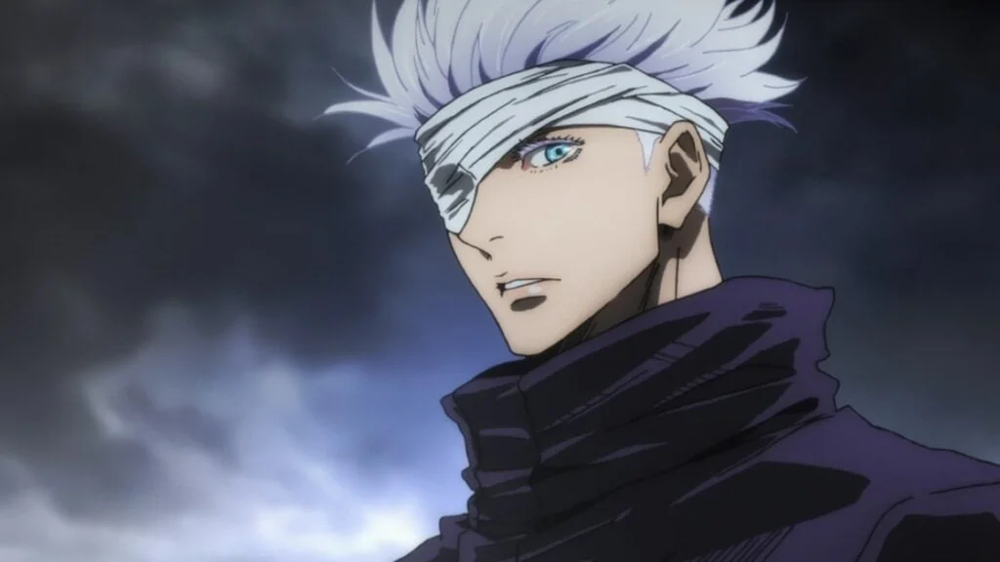Later, Gojo meets with Masamichi to discuss about Geto's involvement in the mission at the Hapina Shopping Center, and rushes to protect the first-years after noticing Geto arrive at the college. When Gojo asks Geto about the purpose of his visit, Geto announces that he arrived to declare war on Jujutsu High, revealing his plans to release a thousand curses in Shinjuku and Kyoto respectively on December 24, an attack which he named the Night Parade of a Hundred Demons. As he prepares to leave, Gojo attempts to stop him, but Geto summons a cursed spirit to threaten the first-years, forcing Gojo to allow him to escape. Once Geto leaves, Gojo attends a meeting were the jujutsu sorcerers discuss their course of action.
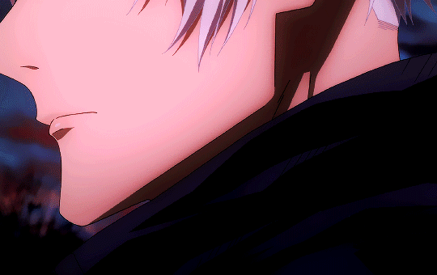On December 24, Gojo is at Shinjuku and wonders why Geto is not at the front line. Suddenly, Kiyotaka tells Gojo about what he had found out about Yuta, and Gojo figures out that Geto is at the college. Gojo then uses his cursed technique to send Toge and Panda back to the college. When the war starts, Gojo takes on Miguel and manages to easily overpower him. Once all of Geto's comrades retreat, Gojo heads over to the college and confronts a severely injured Geto. After having a chat with Geto, Gojo kills him. Gojo then meets with his students and informs Yuta that he is a distant relative of his. When Rika's curse is undone, Gojo says that it was Yuta who had cursed her and congratulates him on undoing her curse.
Later, Gojo is with Yuta and informs him about Geto. He then gives him back his student ID.
At some time before the Shibuya Incident, Gojo meets up with Yuta and tells him to take care of Yuji incase he's gone. He also asks him where Miguel was, and was disappointed that he doesn't want to see him.
Fearsome Womb Arc
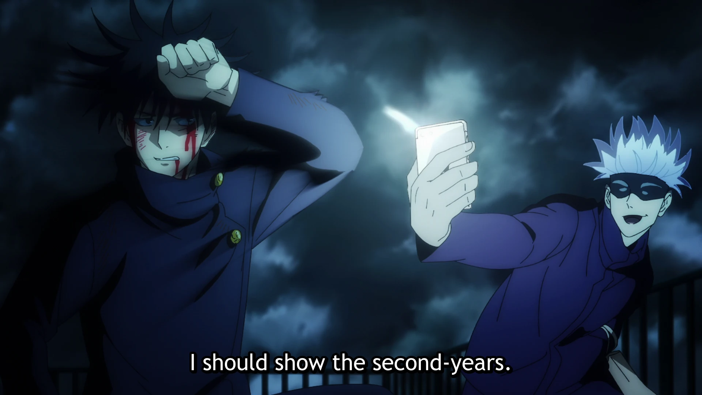Gojo arrives at Sugisawa Third High School to check up on the situation, and finds out that Yuji has eaten one of Sukuna's fingers. Gojo decides to check how strong Yuji is by seeing if Yuji can take his body back after letting Sukuna have control for 10 seconds. Gojo then takes on Sukuna and after ten seconds, Yuji takes back his body. Afterwards, Gojo knocks Yuji out to see if Sukuna takes over after Yuji wakes up. Gojo then asks what Megumi thinks they should do, to which Megumi replies that they should execute Yuji but doesn't want him to die. Megumi also asks for Gojo's help, and his teacher agrees to do something about it.[33]
Later when Yuji wakes up, Gojo greets him and introduces himself to him. Gojo also informs Yuji that his execution has been sent and explains the reason that they are going to suspend their execution. Gojo also explains who Sukuna is and how in order to finally exorcise Sukuna, that is why Yuji has to eat all of Sukuna's finger before being executed.[34]
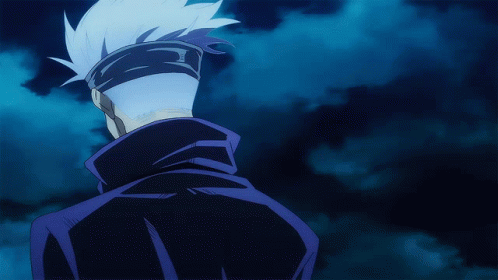After letting Yuji go to meet with his friends, Gojo meets with him and asks for his decision. Yuji asks about the casualties that come from curses, which Gojo explains it to him. Yuji then asks for Sukuna's finger, and Gojo gives the finger to him. Yuji manages to remain in control after eating the finger, which Gojo figures that Yuji is able to keep Sukuna in check. Gojo then tells Yuji to get his stuff together since he will be joining the college, and that there is only three first years.[35]
After arriving at the college, Gojo is escorting Yuji to his interview with principal Masamichi and also warns him that he might fail the interview if he messes up. Suddenly Sukuna talks through a mouth he made on Yuji, and voices his opinion about the school. Sukuna also says that he will kill Gojo first since he owes him a debt and Gojo considers it an honor. Gojo then brings Yuji to Masamichi, then Gojo watches as Yuji has his interview. When Masamichi accepts Yuji to the college, Gojo brings Yuji to his room. While Yuji is unpacking, Gojo explains that Yuji is now a radar that can find Sukuna's fingers since he has become Sukuna's vessel. When Megumi comes out of his room, which is next to Yuji's, Gojo tells them that tomorrow they will go pick up the third first year student.
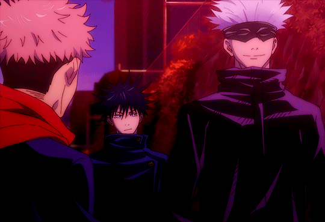The next day, Gojo takes Megumi and Yuji to Harajuku in order to pick up the last first year student, Nobara. After they pick up Nobara, Gojo brings the three to Roppongi for a mission which disappoint Nobara and Yuji. As they reach the mission site, Gojo informs them that only Nobara and Yuji will head inside since he wants to test them. Gojo also hands Yuji a cursed tool since he can't use jujutsu yet, but also tells him to not let Sukuna out. Gojo then waits outside with Megumi, as Nobara and Yuji head inside.[37] While waiting, Gojo explains his reasoning for wanting to test them.[38] When one of the spirits tries to escape, Gojo stops Megumi from exorcising it so that Nobara can exorcise it.[39] After the mission is complete, Gojo decides to take them out to eat.[40]
Two weeks later, Gojo goes on a business trip and due to this, he is unable to take the first years on a mission.[41]
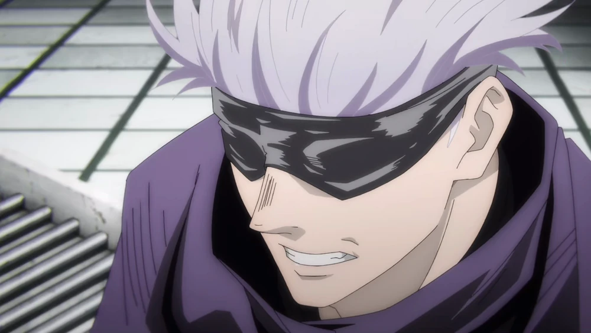After the mission at the detention center that resulted in Yuji's death, Gojo meets at the morgue with Kiyotaka. Gojo talks about how Yuji's death during the mission was planned by the higher ups and that he should just kill them all. When Shoko shows up to examine the body, Gojo tells her to make use to him. As Shoko prepares for her examination, Gojo explains to Kiyotaka why he had become a teacher. Just as Shoko is about to start her examination, Gojo watches as Yuji suddenly returns to life. Gojo greets Yuji about him returning to life. Gojo then leaves with Shoko, and discusses about how he wants Yuji to stay as deceased on the paper so that he can help get Yuji stronger.
.jpg) Afterwards, Gojo brings Yuji to a room to train him in the art of jujutsu which Yuji is excited about. Gojo then explains how cursed power and techniques works, and evens demonstrates it. Gojo also explains how emotions play a big part in controlling cursed power and that Yuji will train by watching movies. Gojo hands Yuji a cursed corpse that attacks a person that is not releasing a constant flow of cursed power, and says that Yuji will be watching movies with it. When Yuji starts to watch the movies, Gojo heads out to meet with the Principal Masamichi.
Satoru Gojo vs. Jogo
Gojo faces off against the curse Jogo, overpowering him.
While being driven to the meeting by Kiyotaka, Gojo has Kiyotaka stops the car. Gojo gets out and tells Kiyotaka to head on without him. After Kiyotaka leaves, Gojo is attacked by Jogo but Gojo is unharmed. Gojo thinks about how Jogo is an unregistered special grade spirit, and that Jogo might be stronger than the current Sukuna. Jogo then continues his assault, and Gojo remains unharmed by any of his attempts. As Jogo wonders why Gojo is unharmed, Gojo explains how his ability works and that even though Jogo can't touch him, he can easily touch Jogo. Gojo then attacks Jogo, by kicking him that sends Jogo flying. As Jogo tries to counterattack, Gojo easily dodges and attacks Jogo. Gojo then heads back to retrieve Yuji, so that he can observe the fight. As Gojo arrives back at the fight, Jogo comments about how Yuji will become a hindrance for Gojo.
Gojo replies that it won't matter since Jogo is weak, which makes Jogo angry. Gojo then tells Yuji to not leave his side, as Jogo traps the two in his territorial expansion. As Yuji is confused, Gojo explains what territorial expansion is and how it works. Gojo then uses his own territorial expansion to trap Jogo and explains to Jogo and Yuji how his technique works. Gojo destroys Jogo's body and starts to interrogate him. Suddenly, Gojo and Yuji are distracted, which Hanami uses as chance to rescue Jogo. Gojo and Yuji try to stop them but the two have already escaped. Gojo then explains to Yuji that he is going to train him to get stronger become the exchange.
Days later, Gojo meets with Yoshinobu and talks about how the wave of power that the older generations have keep sealed, will come crashing down on them. As Yoshinobu becomes angry at Gojo, Gojo says that he is done talk and leave but not before tells Yoshinobu that Masamichi will arrive two hours later.
Afterwards, Gojo brings Yuji to a room to train him in the art of jujutsu which Yuji is excited about. Gojo then explains how cursed power and techniques works, and evens demonstrates it. Gojo also explains how emotions play a big part in controlling cursed power and that Yuji will train by watching movies. Gojo hands Yuji a cursed corpse that attacks a person that is not releasing a constant flow of cursed power, and says that Yuji will be watching movies with it. When Yuji starts to watch the movies, Gojo heads out to meet with the Principal Masamichi.
Satoru Gojo vs. Jogo
Gojo faces off against the curse Jogo, overpowering him.
While being driven to the meeting by Kiyotaka, Gojo has Kiyotaka stops the car. Gojo gets out and tells Kiyotaka to head on without him. After Kiyotaka leaves, Gojo is attacked by Jogo but Gojo is unharmed. Gojo thinks about how Jogo is an unregistered special grade spirit, and that Jogo might be stronger than the current Sukuna. Jogo then continues his assault, and Gojo remains unharmed by any of his attempts. As Jogo wonders why Gojo is unharmed, Gojo explains how his ability works and that even though Jogo can't touch him, he can easily touch Jogo. Gojo then attacks Jogo, by kicking him that sends Jogo flying. As Jogo tries to counterattack, Gojo easily dodges and attacks Jogo. Gojo then heads back to retrieve Yuji, so that he can observe the fight. As Gojo arrives back at the fight, Jogo comments about how Yuji will become a hindrance for Gojo.
Gojo replies that it won't matter since Jogo is weak, which makes Jogo angry. Gojo then tells Yuji to not leave his side, as Jogo traps the two in his territorial expansion. As Yuji is confused, Gojo explains what territorial expansion is and how it works. Gojo then uses his own territorial expansion to trap Jogo and explains to Jogo and Yuji how his technique works. Gojo destroys Jogo's body and starts to interrogate him. Suddenly, Gojo and Yuji are distracted, which Hanami uses as chance to rescue Jogo. Gojo and Yuji try to stop them but the two have already escaped. Gojo then explains to Yuji that he is going to train him to get stronger become the exchange.
Days later, Gojo meets with Yoshinobu and talks about how the wave of power that the older generations have keep sealed, will come crashing down on them. As Yoshinobu becomes angry at Gojo, Gojo says that he is done talk and leave but not before tells Yoshinobu that Masamichi will arrive two hours later.
Kyoto Goodwill Event Arc
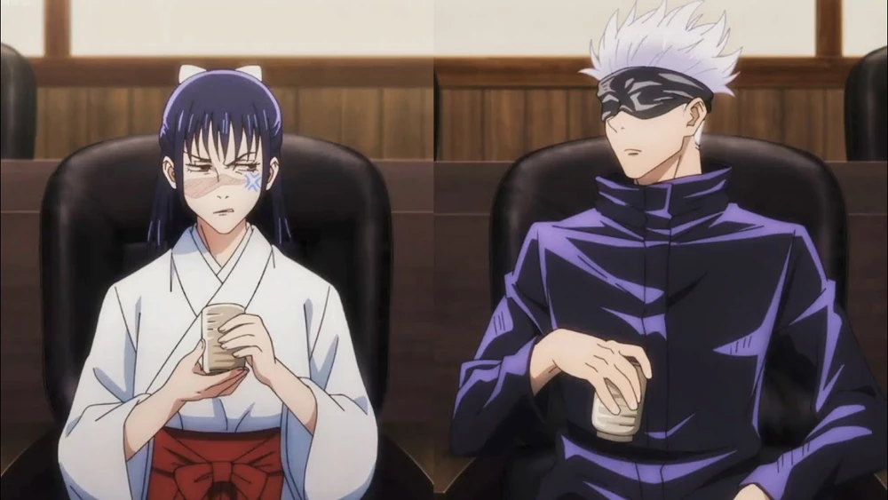On the day of the Kyoto Goodwill Event, Gojo is with Nanami as they discuss what had happened during the mission that Yuji was on. When Yuji arrives excited about meeting the others, Gojo tells Yuji that they have to make it a surprise and explains his reasoning. Yuji agrees with Gojo and wonders what he has to do. Later Gojo meets up with the Tokyo and Kyoto students along with the faculty, and reveals that Yuji is still alive. As Yoshinobu is seems shocked, Gojo mocks him about this. Gojo then helps to explain how the event will be held to the students. Afterwards Gojo meets with Utahime, and Gojo reveals that there might be a spy and that he wants Utahime to investigate the Kyoto college. When Utahime asks what if she's the mole, Gojo simply replies that she's too weak to be the mole who throws her cup of tea at him.
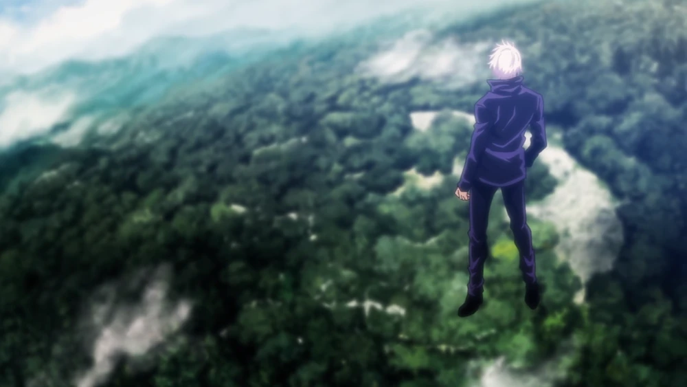Before the events starts, Gojo meets up with the other faculty to watch the event. As the event starts, Gojo watches it through monitors with the other faculties. During the event, Mei Mei notices how strong Maki is and wonders why she has not been promoted. Gojo explains how her family is getting in the way and also points out how the video around Yuji is inconsistent. Gojo thinks that they have something up their sleeve, but Yuji is not the same that he once was. As another curse spirit is exorcised, Gojo wonders if the students have forgotten about the main objective. When intruders invade the site, Gojo heads over to the site along with Utahime and Yoshinobu. As they head over, Yoshinobu tells Gojo to get into the area before the screen is completed, but Gojo notices that the effect of the screen is already done. As the three reach the site, they find out the Gojo is the only one that can't enter the screen. Gojo tells the two to head in so that they can help the others. After some time passes, Gojo finally manages to break into the barrier. He decides to handle Juzo first, and easily manages to restrain him. Gojo then uses a Hollow Purple technique on Hanami, but they can't tell for sure if he is killed. After the intruders have been dealt with, Gojo attends a meeting with the other faculty members were they discuss everything that had happened during the invasion and how they have got nothing from Juzo. As Masamichi says that the event is over, Gojo notes that this is not for them to decide. Gojo then meets with the students and they settle on continuing the event. When its decided that they will play a game of baseball, Gojo plays that umpire for the game.
Death Painting Arc
Days later, Gojo calls Utahime to talk about what his students have done and wonders if she had found something out about the mole in the midst. After hanging up on Utahime, Gojo thinks about how he is counting on Mei Mei, who he transfers 10 million yen to, via the bank account.
Shibuya Incident Arc
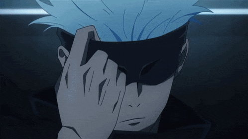Sometime later, Gojo is asleep when Yuji, Megumi, and Nobara arrive at his location. Gojo wakes up, and gets up from his seat. When Megumi asks him why was he smiling to which he says its nothing and sends them to Utahime.
On October 31, Gojo enters the curtain that was erected over Shibuya. As Gojo makes his way through the crowd of people, he figures about what the enemy's intentions and decides to move towards the basement. As Gojo reaches the underground subway, he is confronted by Jogo, Hanami, and Choso. Gojo then prepares to fight against the three. As Hanami starts to block all the exits, Gojo tells them that that is not necessary since he is not planning to run away.
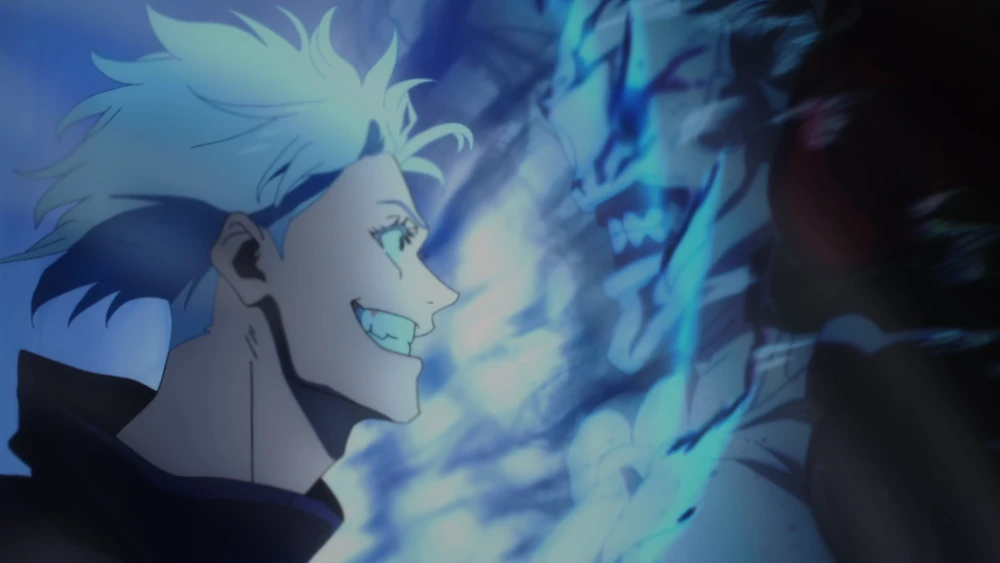The cursed spirit then have the trapped people surround them and starts to attack Gojo. When Jogo and Hanami attack using the domain amplification technique on Gojo, but Gojo manages to dodge it. Gojo thinks about how domain amplification works and how he is now vulnerable to their attacks. When Jogo comments about how Gojo was not going to run away, while Gojo replies that he is surprised that the cursed spirits think that they thought that they could defeat him with tiny brains. Gojo takes his blindfold around his eyes off, and says that he will first take down Hanami since Hanami hasn't learned his lesson after facing him twice before.
As Gojo gets closer to Jogo and Hanami, Jogo and Hanami attack Gojo. Gojo manages to dodge their attacks and even manages to rip Jogo's arm off. As Jogo goes to distance himself from the fight, Gojo chances after him. Hanami figures that Gojo is not using his cursed techniques and decides to try and attack with his technique, but Jogo tells him not to do it. Gojo quickly grabs a hold of Hanami and breaks the branches off of Hanami's head. Suddenly Choso attacks Gojo, but Gojo easily blocks the attack. Gojo figures out that Choso is one of the Cursed Womb Death Painting and how he is not attacking like Hanami and Jogo. Suddenly Hanami and Jogo attack Gojo, but Gojo tells them that this attack won't work since Hanami is currently weakened. Gojo then uses his cursed technique to crush Hanami against the wall. After killing Hanami, Gojo tells Jogo that he is next.
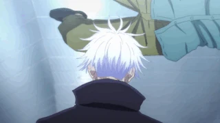Jogo and Choso continue to attack Gojo, but all their attacks don't work. Gojo thinks about how the two are attacking from a distance and that is all they can do. Gojo notices that the people are starting to avoid him and thinks about how he will be able to get to Jogo once enough people scatter. Gojo thinks about how he wants to fight the two and that he won't be able to save them all. Gojo then comments about how he will exorcise the cursed spirits. When a train full of mutated humans arrive and starts to attack the people, Gojo wonders what they are thinking.
As Mahito attacks Gojo, Gojo easily dodges and counters but Mahito dodges. When more humans are sent to their location, Gojo thinks about how the entrance to their location is open and that their are more shamans or curses throwing the humans to their location. Gojo is then distracted when Mahito and Choso attack but all it does is kill the humans around him. When Jogo suddenly attacks, Gojo grabs a hold of Jogo's arm but Jogo cuts it off to get away. Gojo then activates his domain expansion for less then a second, which stuns cursed spirits and humans. After undoing his domain expansion, Gojo begins to kill all the mutated humans. After taking care of all the mutated humans, Gojo notices a small box, on the floor. The box opens, appearing what looks like a stretched piece of skin with an eye the size of a face staring back at Gojo.
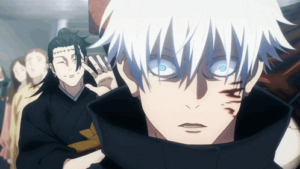Gojo stares at the eye before deciding to leave but freezes when he hears a familiar voice. Walking up from behind him was his once deceased best friend, Geto Suguru. Gojo's confusion about Geto's apparent revival causes one minute of time to pass within his mind as he flashes back on all of his memories with him. This causes the box's sealing condition to be fulfilled and wraps itself around Gojo. He realizes that this is checkmate since he is unable to move and his cursed energy is seemingly nullified. Gojo asks who the person in front of him is, the person says that he is Geto. Gojo says that even through his six-eyes ability is telling him that the person in front of him is Geto, but his soul knows that the person in front of him is not Geto. The imposter in front of him reveals that Gojo is correct and that he is capable of switching bodies by switching brains and therefore is able to covet said body's cursed technique. The person also says that he will unseal Gojo in a thousand years after they have finished their plan.
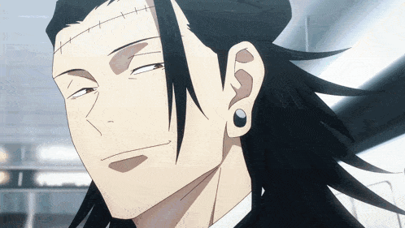Gojo warns the imposter that even though he will be trapped he should still be worried about Yuta Okkotsu; the imposter explains how Yuta had become so powerful and that he won't be able to become the next Gojo. The imposter then bids Gojo farewell as he prepares to seal Gojo within the Prison Realm. Before being sealed, Gojo asks Geto how long he plans to let someone else take control of his body, when Geto's arm suddenly grabs his own neck. The imposter laughs and comments on how that this was the first time an inhabited body disobeyed him. The grip is not tight, and the impostor calls Mahito over and the two continue a philosophical discussion on what came first, the body or soul. After listening to the two ramble, Gojo tells the impostor to just seal him away already, since he is tired of listening to them. The impostor then seals Gojo in the Prison Gate's boundary.
Geto is holding the cube when it begins to shake and then plummets to the ground by an unforeseen force, shattering the floor on impact. Due to Gojo's massive amount of power, the Prison Realm is having a hard time processing his power and Gojo was able to use his technique to force the Prison Gate's Boundary to the ground much to the annoyance of the impostor. Inside of the seal, Gojo comments about how he had messed up but reassures himself that everything will be fine and that he still has faith in everyone.